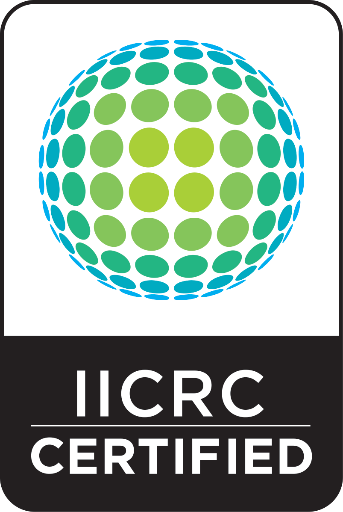

Welcome to Multi Clean, your carpet & upholstery cleaning experts. Multi Clean provides professional, residential, and commercial carpet and upholstery cleaning for Emmett Idaho along with Sweet, Ola and Horseshoe Bend areas.
At Multi Clean, we take pride in our reputation, experience, education, systems and our 100% Customer Satisfaction Guarantee. Multi Clean is a IICRC certified firm, the world’s most recognized body of certification for carpet and upholstery cleaners.
(208) 365-4316
"A CLEAN CARPET, THAT'S WHAT WE STAND ON!"

arrow_back
Multi Clean was founded in 1985 by Doug and Carolyn Smith. They ran it as a family business in Emmett for over 20 years. They built Multi Clean one customer at a time and developed a reputation for honesty, dependability and quality carpet and upholstery cleaning. To many in Emmett and the surrounding areas, Multi Clean has become a household name.
As the current owners of Emmett’s most renowned carpet and upholstery cleaning company, Robert and Tammy felt the need to continue to raise the bar for excellence in the services that made Multi Clean stand out. So as to set that benchmark, Robert and Tammy adopted the Multi Clean, Inc. 10 Step Cleaning Process. This process has become a mark of quality. When all 10 Steps are followed with precise care, the results are fabulous.
Early in 2008, Multi Clean Inc. was invited to join the Better Business Bureau and we gladly submitted to the high standards of the BBB. Multi Clean is also pleased to be an IICRC Certified Firm. The Institute of Inspecting Cleaning and Restoration (IICRC) is a nonprofit certifying and standard-setting organization dedicated to raising the industry standards through technical proficiency. By administering a strict process of certification, the IICRC provides a means by which consumers can receive the highest quality of service from trained, knowledgeable, professional technicians.
If it’s been over a year since your carpet was cleaned, you owe it to yourself to give Multi Clean a try. After all, ” A clean carpet, that’s what we stand on” … and so should you!
From our family to yours, thanks for visiting! Robert & Tammy Pierson
How often should I have my carpets cleaned?
Leading carpet manufacturers recommend carpet cleaning every year and more often if they have special circumstances.Having Multi Clean professionals clean your carpet with hot water extraction helps preserve the life of your carpet and offers other indoor air quality benefits to keep your family healthy.
What should I do to prepare my home for carpet cleaning?
We recommend moving small items out of the areas you want us to clean.If you can make sure your vehicle is not blocking the area that would be best for us to park our van, that would be nice.Children are naturally curious about what we are doing, but their safety is of great concern, so please make sure your children are in an area away from the areas we are cleaning.Pets can become frightened during the cleaning process so it would be best to put them in a secure location.If you choose our economy or silver cleaning packages, we do not pre-vacuum, so it would be a good idea for you to so before we arrive.If you choose our gold or platinum packages we will do a through vacuuming for you.
What is ‘steam cleaning’?
The term ‘steam cleaning’ is slightly misleading because this process does not actually use steam. Very simply, a hot water extraction unit is used to pump a solution of hot water and detergent into the carpet and the extract it again with soil from the carpet.
How can I get my carpet to dry fast? 1: Make sure that you have ample cross airflow over your carpet or upholstery.This can be accomplished with fans, or byopening all doors and windows (if weather permits).Ceiling fans ina room will help with this process if they are available.As far asfan placement, try areas that you need to be walking across soon. 2: Make sure that the heat is set to 70-75 degrees.This is not needed if the outside temperature already has the building heated. 3: It is important that you DO NOT cover the carpet or upholstery with towels or rugs until dried. It is also important that you DO NOT put or move furniture on the Carpet until dried as this may damage your furniture and permanently stain your carpet. 4: If foam blocks or plastic sheets where placed under furniture legs during the cleaning process, you may remove them once the carpet is dry.We suggest that you move the furniture 3 or 4 inches to allow the carpet to dry where the block or sheets had been placed. 5: Please keep children and pets off the carpet until dried.
How often should I vacuum my carpet?
We suggest for a home that you vacuum, at a minimum, weekly, ideally 2 or 3 time a week. If you are a “no shoes in the house” family you can probably get by with a good weekly vacuuming.If you have kids and pets running in and out, the more the better. Soil, sand and grit are very abrasive to carpet. So when they are ground into carpet, they scratch the fibers and the result is called ‘fiber distortion’. This increases the opacity of the carpet fibers, so when these fibers are next to areas that don’t receive as much foot traffic, they look distorted and soiled.So vacuum frequently to make sure that does not happen!
Does carpet protector work?
Yes!Carpet protector helps reduce the impact of soiling or spills on the fibers. Protectors create an invisible barrier that minimizes the ability of spills and soils from adhering to the carpet fibers.Multi Clean is pleased to feature Green Guard Carpet protector, for the following reasons:
* The first and ONLY TRUE Green carpet protector certified by the EPA!
* Anti-Stain Properties
* Anti-Resoiling Properties
* Limits Wicking!
* Neutralizes Alkalinity
* Prevents Browning or Yellowing
* Non-Toxic
* Skin Friendly
* Biodegradable
* Superb Soil
* Fragrance FREE
* Safe For Children And Pets
What type of payment options do you accept?
We accept local personal checks, Visa, Master Card, Discover and American Express.We will accept cash, but it needs to be in the exact amount of the invoice, as we do not make change. Another option is our Easy Pay Plan:Your total invoice will be divided into three equal payments.The first payment will be due immediately after the work is completed, payable by check, cash or credit card.We will then accept two additional postdated checks, to be credited to your account over the period of two more months. If you are interested in this option or have questions about, please call our office.An application is required for this payment plan, and you must own your home. Sorry, this will not work for rentals.
What type of payment options do you accept?
We accept local personal checks, Visa, Master Card, Discover and American Express.We will accept cash, but it needs to be in the exact amount of the invoice, as we do not make change. Another option is our Easy Pay Plan:Your total invoice will be divided into three equal payments.The first payment will be due immediately after the work is completed, payable by check, cash or credit card.We will then accept two additional postdated checks, to be credited to your account over the period of two more months. If you are interested in this option or have questions about, please call our office.An application is required for this payment plan, and you must own your home. Sorry, this will not work for rentals.
Do you move furniture?
We can move chairs, sofas, end tables, and dining room tables.Due to liability issues, we do not move larger/heavier pieces such as beds, entertainment centers, bookcases, pianos, china hutches, beds, chest of drawers, dressers, etc.After cleaning we do insert either foam blocks or plastic tabs under the legs of the furniture we move, which should be left for 24 hours.A small fee of $3.00 is charged per item that is moved and blocked.
Carpet in the high traffic area still appears dirty- why?
There are many reasons this can happen; the following outlines some of the possible causes.If you have questions about your high traffic areas, please give our office a call and we will be happy to talk to you about it. Fiber Distortion: Soil, sand and grit are very abrasive to carpet. So when they are ground into the carpet, they scratch the fibers and the result is fiber distortion. This increases the opacity of the carpet fiber in the traffic lanes, so when these fibers are next to areas that don’t receive as much foot traffic, they look distorted and soiled. Light Reflection: When carpet fibers are distorted (see#1), they reflect light at different angles than the adjacent carpet that didn’t receive as much foot traffic. So the result is the carpet can look soiled. Wear: Traffic lanes are just that areas that receive the most foot traffic. Carpet fibers in these areas tend to flatten over time, and there is actually a reduction in the amount of face fiber compared to the adjacent non-traffic areas. When this happens, there is nothing you can do to “fluff up” the carpet fiber – it will always appear flat and sometimes soiled. Nap Reversal: Sometimes the pile will lay in a different direction than the rest of the carpet fibers. This causes light to be reflected in such a way that the carpet appears soiled. If you view the carpet from another direction it may not appear as soiled. Carpet extraction can sometimes temporarily lift the carpet fibers, but it does not last. Filtration Lines:Filtration soiling is the dark lines around walls and underneath doors. Filtration lines form when your air conditioning and heating system blows air into your room. The air is blown into a room effectively pressurizing it. The air must go somewhere so it goes underneath walls and closed doors to equalize the room’s pressure. The carpet along this area acts as a filter. It traps the fine particles of dust and soot that are in the air. These fine particles are difficult if not impossible to remove. To help prevent Filtration lines, limit the burning of candles, incense or oil burners. Also try to leave doors to rooms open as much as possible. This gives the air a place to go besides under your walls. Lastly you can use quality air filters in your HVAC system that filter smaller dirt particles. And of course vacuum your carpet frequently (paying special attention areas next to walls and under doors) and have it professionally cleaned with hot water extraction, and have carpet protector applied annually.
After cleaning, I have ripples in my carpet?
This happens to some carpets each time they are cleaned.Generally it happens because the carpet needs to be re-stretched.The good news is the carpet should go back down within 24 to 48 hours.
When it is time to have your carpet cleaned, you can trust Emmett’s family owned and operated Multi Clean to give you the best carpet cleaning possible. Our team takes the time to do the job right, and we know that you want the most out of your hard earned money. You will notice below our carpet cleaning packages, in each package you will receive a superior carpet cleaning using our truck mount hot water extraction unit, also known as steam cleaning. Our aim is not to be just a carpet cleaner, our aim is to be YOUR carpet cleaner. We want to exceed your expectations in quality, professionalism and value!
At Multi Clean, Inc. we clean more than just your carpets. Our complete lineup of professional upholstery cleaning services will enhance the beauty of your home and complement your carpet cleaning. Upholstery cleaning really is an art, and it takes time to do it right. At Multi Clean we make it our policy to take the time to do the job right, and that means we treat every piece of furniture as if it is a family heirloom. Our professional upholstery cleaning experts will bring back the original beauty of the following types of upholstered furniture:
Sofas
Loveseats
Recliners
Armchairs
Ottomans
And more
We use a specialized, 10-step cleaning process to make your upholstery look like new:
Step 1: Pre-Inspection and Upholstery Audit
Step 2: Prepare the furnishing for cleaning
Step 3: Pre-Vacuum
Step 4: Apply Color Stabilizer (if needed)
Step 5: Pre-Spray
Step 6: Rinse and Extraction
Step 7: Pre-Grooming
Step 8: Upholstery Protector (optional)
Step 9: Final Grooming
Step 10: Client Inspection and Care Instructions
We also offer an optional fabric protector that will help keep your furniture cleaner longer.
If your upholstered furniture doesn’t need a full cleaning yet but could use a thorough vacuuming to remove the long-term buildup of dust, dust mites, pet dander, pollen, and other particulate matter that can lead to allergy flare-ups, call our specialists. Our deep vacuuming service will help your family breathe easier while giving your furniture a new lease on life, letting you wait that much longer before scheduling a full cleaning.
As you can imagine finding quality clients, like yourself, can be expensive for a business. So, rather than paying for costly advertising we would rather pay you for referring business to us. Our referral reward program is very easy: Simply cut out the coupons we provide you after your cleaning, and give them out to your friends and family. As a REWARD for every new client * that you refer to us, we will credit your account $10.00 -good for your own future cleaning services. Thank you for your help, and we look forward to giving you your reward!